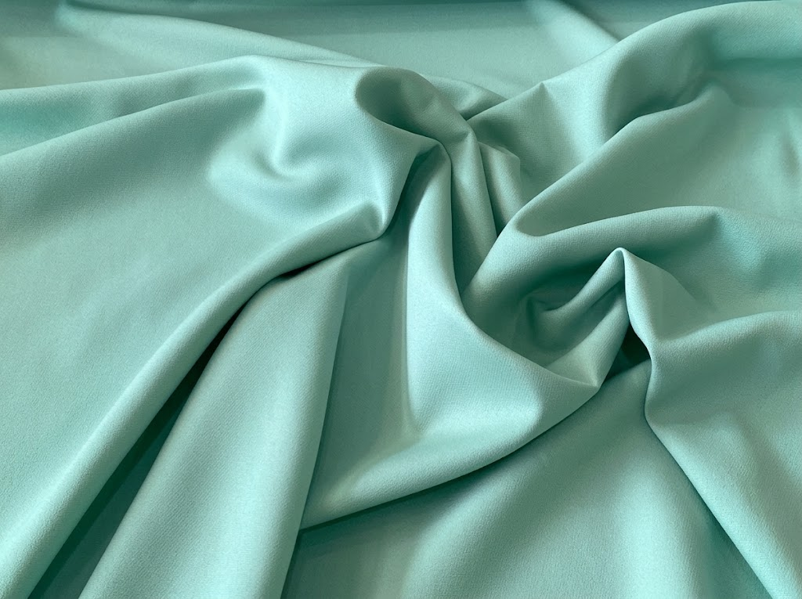
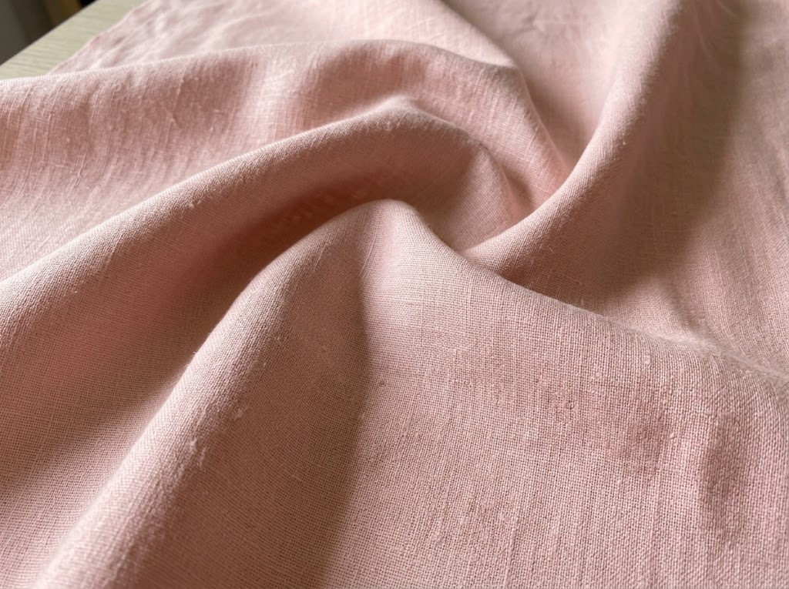
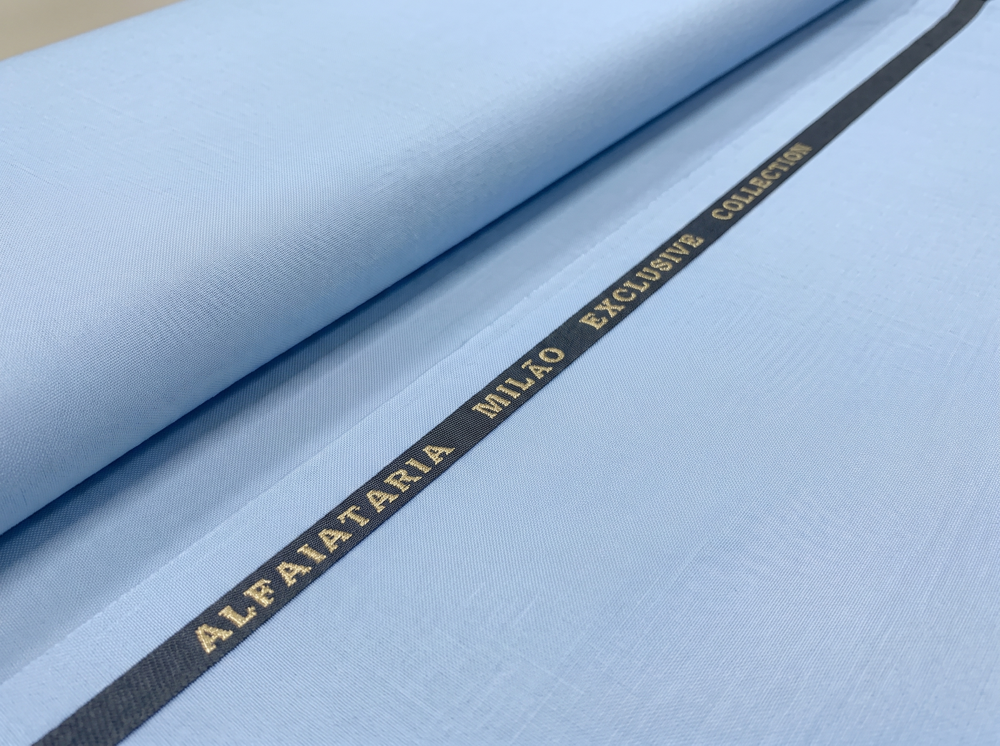

Instruções
Digite a quantidade desejada (em metros) no campo de cada tecido e clique no botão abaixo para calcular o total.
Nossos Tecidos

Crepe Barbie
Tecido encorpado, elegante e com toque macio, muito utilizado na moda feminina e em peças de alfaiataria leve ou estruturada.
R$ 19,90 / metro

Linho Puro
Tecido nobre, natural e respirável, com textura encorpada e toque fresco, que proporciona caimento firme e aspecto rústico sofisticado às peças.
R$ 89,90 / metro

Alfaiataria Milão
Tecido estruturado com leve elasticidade, ideal para ternos e blazers, combinando a elegância clássica da alfaiataria com a leveza e a flexibilidade dos materiais moderno.
R$ 49,90 / metro